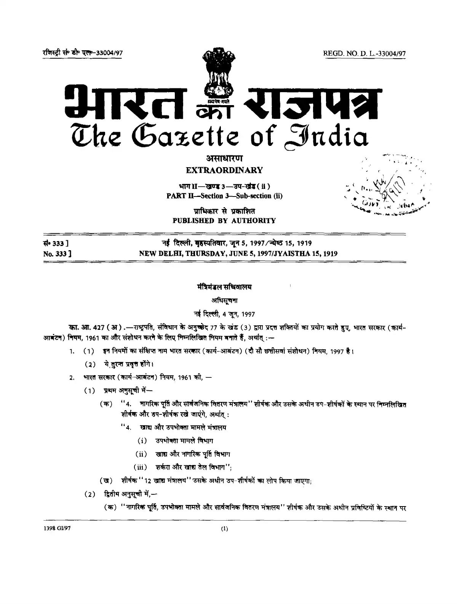
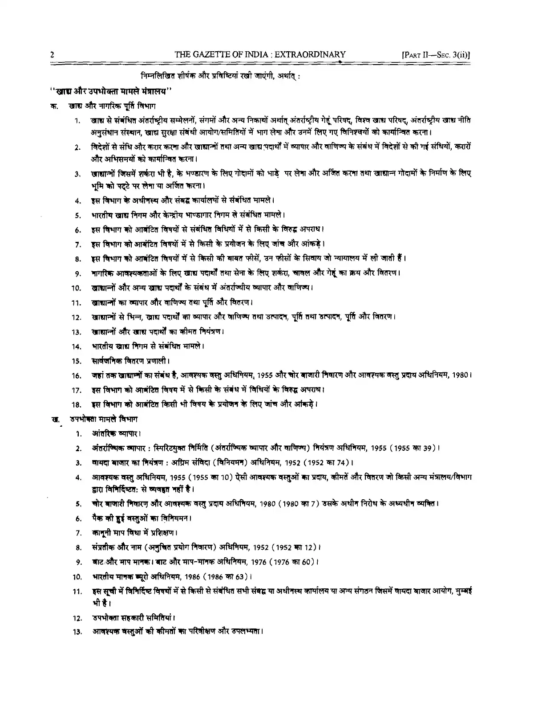
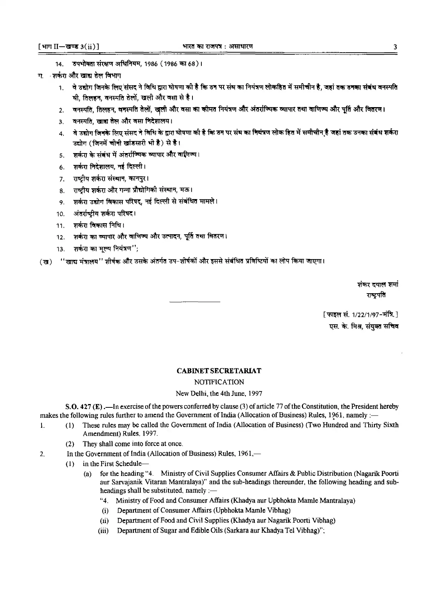
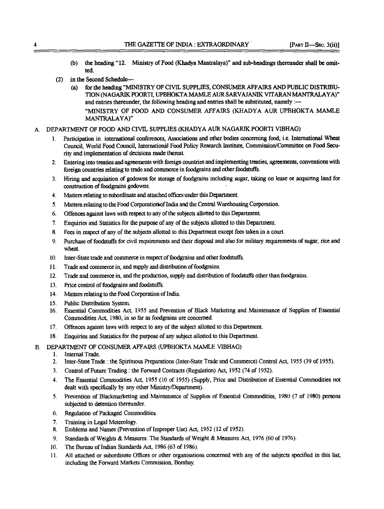
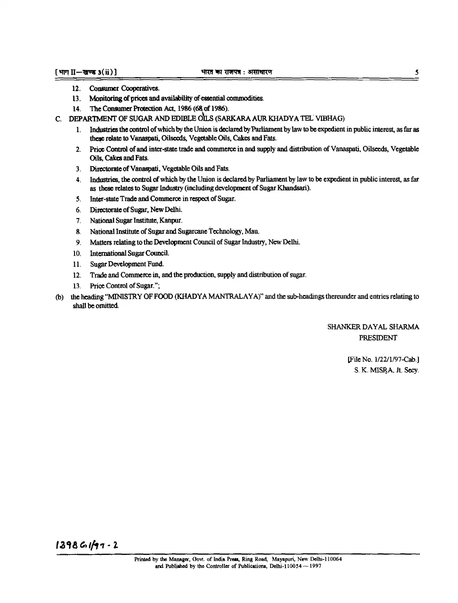

Amendment #236 (S.O. 427(E), 1997)
4 changes: 2 to the First Schedule, 2 to the Second Schedule. 4 applied
What it did to the ministries
- mergedMinistry of Civil Supplies, Consumer Affairs and Public Distribution and Ministry of Food merge into Ministry of Food and Consumer Affairs change 1, 2, 3, 4 · histories: Civil Supplies, Consumer Affairs and Public Distribution, Food, Consumer Affairs & Food
The order, page by page
Page 1 of 6

Page 2 of 6

Page 3 of 6

1Schedule 1 › Ministry of Civil Supplies Consumer Affairs & Public Distribution
- 4. Ministry of Food and Consumer Affairs
- i. Department of Consumer Affairs
- ii. Department of Food and Civil Supplies
- iii. Department of Sugar and Edible Oils
applied at schedule 1 › ministry 4 in the Rules after #236
Page 4 of 6

23Schedule 1 › Ministry of Food
applied at schedule 1 › ministry 12 in the Rules after #236
Schedule 2 › MINISTRY OF CIVIL SUPPLIES, CONSUMER AFFAIRS AND PUBLIC DISTRIBUTION
- MINISTRY OF FOOD AND CONSUMER AFFAIRS
- A. DEPARTMENT OF FOOD AND CIVIL SUPPLIES
- Participation in international conferences, Associations and other bodies concerning food, i.e. International Wheat Council, World Food Council, International Food Policy Research Institute, Commission/Committee on Food Security and implementation of decisions made thereat.
- 2. Entering into treaties and agreements with foreign countries and implementing treaties, agreements, conventions with foreign countries relating to trade and commerce in foodgrains and other foodstuffs.
- 3. Hiring and acquisition of godowns for storage of foodgrains including sugar, taking on lease or acquiring land for construction of foodgrains godowns.
- 4. Matters relating to subordinate and attached offices under this Department.
and 43 more
- 5. Matters relating to the Food Corporation of India and the Central Warehousing Corporation.
- 6. Offences against laws with respect to any of the subjects allotted to this Department.
- 7. Enquiries and Statistics for the purpose of any of the subjects allotted to this Department.
- 8. Fees in respect of any of the subjects allotted to this Department except fees taken in a court.
- 9. Purchase of foodstuffs for civil requirements and their disposal and also for military requirements of sugar, rice and wheat.
- 10. Inter-State trade and commerce in respect of foodgrains and other foodstuffs.
- 11. Trade and commerce in, and supply and distribution of foodgrains.
- 12. Trade and commerce in, and the production, supply and distribution of foodstuffs other than foodgrains.
- 13. Price control of foodgrains and foodstuffs.
- 14. Matters relating to the Food Corporation of India.
- 15. Public Distribution System.
- 16. Essential Commodities Act, 1955 and Prevention of Black Marketing and Maintenance of Supplies of Essential Commodities Act, 1980, in so far as foodgrains are concerned.
- 17. Offences against laws with respect to any of the subject allotted to this Department.
- 18. Enquiries and Statistics for the purpose of any subject allotted to this Department.
- B. DEPARTMENT OF CONSUMER AFFAIRS
- 1. Internal Trade.
- 2. Inter-State Trade: the Spirituous Preparations (Inter-State Trade and Commerce) Control Act, 1955 (39 of 1955).
- 3. Control of Future Trading: the Forward Contracts (Regulation) Act, 1952 (74 of 1952).
- 4. The Essential Commodities Act, 1955 (10 of 1955) (Supply, Price and Distribution of Essential Commodities not dealt with specifically by any other Ministry/Department).
- 5. Prevention of Blackmarketing and Maintenance of Supplies of Essential Commodities, 1980 (7 of 1980) persons subjected to detention thereunder.
- 6. Regulation of Packaged Commodities.
- 7. Training in Legal Meterology.
- 8. Emblems and Names (Prevention of Improper Use) Act, 1952 (12 of 1952).
- 9. Standards of Weights & Measures. The Standards of Weight & Measures Act, 1976 (60 of 1976).
- 10. The Bureau of Indian Standards Act, 1986 (63 of 1986).
- 11. All attached or subordinate Offices or other organisations concerned with any of the subjects specified in this list including the Forward Markets Commission, Bombay. 5
- 12. Consumer Cooperatives.
- 13. Monitoring of prices and availability of essential commodities.
- 14. The Consumer Protection Act, 1986 (68 of 1986).
- C. DEPARTMENT OF SUGAR AND EDIBLE OILS
- 1. Industries the control of which by the Union is declared by Parliament by law to be expedient in public interest, as far as these relate to Vanaspati, Oilseeds, Vegetable Oils, Cakes and Fats.
- 2. Price Control of and inter-state trade and commerce in and supply and distribution of Vanaspati, Oilseeds, Vegetable Oils, Cakes and Fats.
- 3. Directorate of Vanaspati, Vegetable Oils and Fats.
- 4. Industries, the control of which by the Union is declared by Parliament by law to be expedient in public interest, as far as these relates to Sugar Industry (including development of Sugar Khandsari).
- 5. Inter-state Trade and Commerce in respect of Sugar.
- 6. Directorate of Sugar, New Delhi.
- 7. National Sugar Institute, Kanpur.
- 8. National Institute of Sugar and Sugarcane Technology, Mau.
- 9. Matters relating to the Development Council of Sugar Industry, New Delhi.
- 10. International Sugar Council.
- 11. Sugar Development Fund.
- 12. Trade and Commerce in, and the production, supply and distribution of sugar.
- 13. Price Control of Sugar.
applied at schedule 2 › ministry MINISTRY OF CIVIL SUPPLIES, CONSUMER AFFAIRS AND PUBLIC DISTRIBUTION in the Rules after #236
read page break
Page 5 of 6

4Schedule 2 › MINISTRY OF FOOD
applied at schedule 2 › ministry in the Rules after #236
Page 6 of 6
How this document was read
From the Government of India (Allocation of Business) Rules, 1961 and their amendments, as published by the Cabinet Secretariat (cabsec.gov.in), read by orgpedia. The readings of the older scanned gazettes have known gaps.